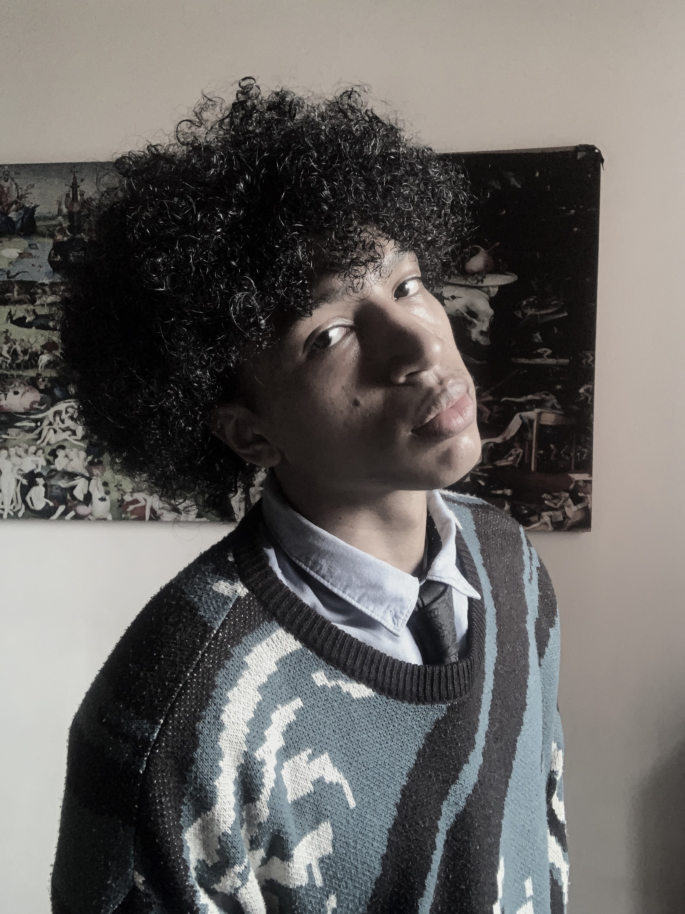

Sobre Nosotros
En Del Dicho al Mito exploramos la riqueza de las tradiciones y la diversidad cultural, transformando relatos en experiencias únicas.
Aquí residen los apasionados por la cultura y la narrativa, conectemos generaciones a través de historias que inspiren y eduquen.
